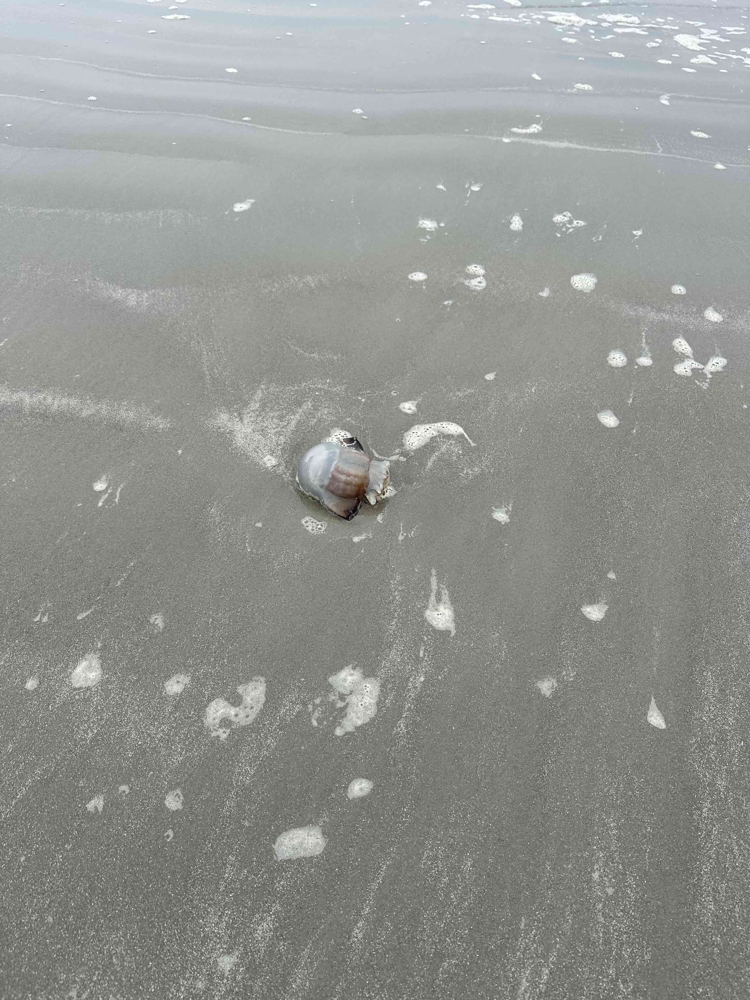

Hello! My name is Alexis Herrera and I am a researcher living in Durham, NC. I am a PhD student in the Graduate Program in Literature at Duke. My interests lie in Latinx cultural studies, psychoanalysis, and film and media theory.

Hello! My name is Alexis Herrera and I am a researcher living in Durham, NC. I am a PhD student in the Graduate Program in Literature at Duke. My interests lie in Latinx cultural studies, psychoanalysis, and film and media theory.
alexis.herrera@duke.edu